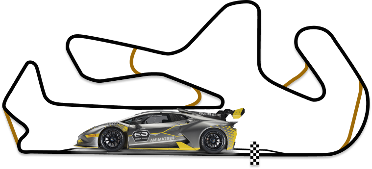

LAMBORGHINI SUPER TROFEO
Гранд-фінал 2022 3-6 листопада
автодром Портімао,Португалія

СУПЕР ТРОФЕО СВІТОВИЙ ФІНАЛ
Світовий фінал Lamborghini завершує щосезону Super Trofeo з 2013 року. Щороку гонщики всіх континентальних чемпіонатів вирушають на різні траси та беруть участь у двох 50-хвилинних спринтерських перегонах, де визначається переможець у загальному заліку. як чемпіон світу Lamborghini. Світовий фінал Lamborghini — це не лише найбільший гоночний вікенд року, а й справжній фестиваль автоспорту, який приваблює шанувальників з усього світу.
Парад власників, прев'ю та розваги у піддоці для вболівальників — це лише деякі із заходів, організованих у рамках заходу.
КОМАНДИ СУПЕР ТРОФЕО
Всі автомобілі, які беруть участь у чемпіонатах Lamborghini Super Trofeo, управляються приватними командами, які використовують свій досвід для тонкого налаштування їх для водіїв. Для кожного континентального чемпіонату Lamborghini Super Trofeo існують рейтинги пілотів та команд.
Пілоти та команди, що беруть участь у континентальній серії, щороку змагаються один з одним у Гранд Фіналі Lamborghini, заході, який завершує спортивний сезон Super Trofeo. Дві кваліфікаційні сесії та дві гонки визначають чемпіонів світу серії. Щороку Гранд-фінал проводиться на різних трасах, і в минулих випусках він уже торкався європейського, азіатського та американського континентів.

календар сезону Super Trofeo Europe 2022 року
14 в історії серії GT, присвячений автомобілям Lamborghini Huracan Super Trofeo Evo. Шість етапів, загалом 12 гонок та 600 хвилин змагань будуть розіграні на деяких із найпрестижніших трас Європи.
| Етап 1: | Імола (Італія) | 1-3 квітня |
| Етап 2: | Ле-Кастеллее (Франція) | 3-5 червня |
| Етап 3: | Мізано (Італія) | 1-3 липня |
| Етап 4: | Спа-Франкоршам (Бельгія) | 29-30 липня |
| Етап 5: | Барселона (Іспанія) | 30 вересня-2 жовтня |
| Етап 6: | Портімао (Португалія) | 3-4 листопада |
| Гранд-фінал 2022 : | Портімао (Португалія) | 5-6 листопада |
ТРЕК ПОРТІМАО
Autodromo Internacional do Algarve знаходиться в однойменному регіоні на півдні Португалії, недалеко від міста Портіман. Відкритий у жовтні 2008 року автоперегоновий комплекс є одним із найсучасніших у Європі, що розкинувся на площі близько 300 гектарів серед пагорбів, що оточують португальське місто, а довжина самої траси становить 4684 метри.
СУПЕР ТРОФЕО ЕВО
Новий Huracán Super Trofeo EVO досягає ще більших висот, ніж його прославлений попередник завдяки повністю переробленій аеродинаміці. Huracán Super Trofeo EVO є ідеальним стартовим майданчиком для всіх водіїв, які хочуть розпочати кар'єру в гонках класу GT.
Huracán EVO - це еволюція найуспішнішого Lamborghini з двигуном V10. В результаті тонкого налаштування та вдосконалення існуючих функцій у поєднанні з новими конструктивними рішеннями, що підвищують продуктивність, автомобіль виділяється своєю здатністю передбачати та задовольняти поведінку, очікування та бажання водія.

- ПЕРЕМІЩЕННЯ
- 5204 см³
- ОБЕРТАЮЧИЙ МОМЕНТ
- 570 Нм при 6500 об/хв
- ПОТУЖНІСТЬ (к.с.) / ПОТУЖНІСТЬ (КВТ)
- 620 к.с. при 8250 об/хв
- МАКС. ШВИДКІСТЬ
- 325 км /ч
- 0-100 КМ/Ч
- 2,9 с
Його неповторний дизайн - це природна еволюція культових ліній Huracán, що включає нові складні рішення, що піднімають продуктивність і викликають емоції на небачений раніше рівень.
Безпрецедентне обважування було розроблено інженерами відділу автоспорту Automobili Lamborghini у співпраці з Dallara Engineering та Lamborghini Centro Stile. Останній також розробив стартову ліврею для автомобіля на честь партнерства між Lamborghini Squadra Corse та Roger Dubuis, яке розпочалося у 2018 році.
Среди наиболее очевидных изменений в обвесе Lamborghini Huracan Super Trofeo EVO — задний спойлер на заднем капоте и верхний воздухозаборник, которые делают его мгновенно узнаваемым для зрителей.